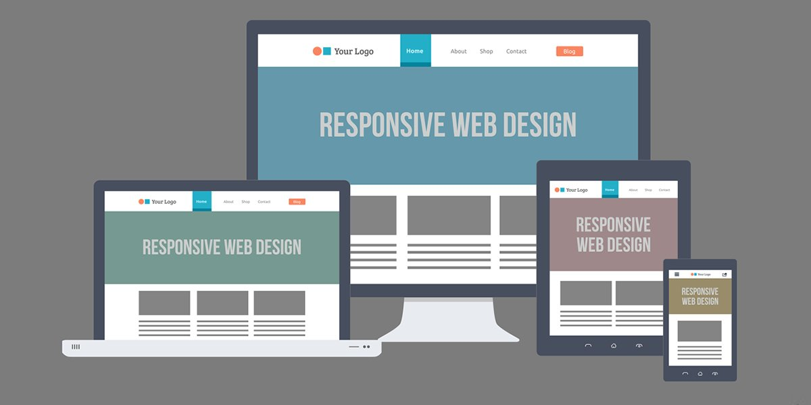

Introduccion
¿Qué es el Responsive Design?
El Responsive Design o diseño adaptativo es la técnica que se usa en la actualidad para tener
una misma web adaptada a las diferentes plataformas que nos brinda la tecnología: ordenador,
tablet, Smartphone, iPad, Kindle y, en resumen, todas las resoluciones de pantalla existentes.
En este punto, se ha vuelto complicado para las empresas mantenerse al día con las infinitas
resoluciones y dispositivos nuevos que están surgiendo, siendo muy poco práctico crear una versión
de la web para cada uno.Sabiendo esto, dicho contexto ha impulsado el nacimiento del Responsive Design, un término que no
es nuevo pero que cada vez es más importante en todos los sentidos. Esta técnica sugiere que el diseño
y el desarrollo de un sitio debe responder al comportamiento y al entorno del usuario en todos los sentidos,
tanto en el tamaño de la pantalla, como en la plataforma y la orientación.
Años atrás, cuando pocas empresas podían permitirse tener diseños adaptativos, lo único que era flexible
eran los elementos estructurales y el texto. Las imágenes, en ese entonces, podían romper fácilmente los diseños.
Estos podían añadir o quitar unos cuantos cientos de píxeles pero normalmente no podían ajustarse, por ejemplo, de
una gran pantalla de un ordenador de mesa a un ordenador portátil pequeño.
Hoy en día esto ha evolucionado mucho. Las imágenes se pueden ajustar automáticamente y tenemos soluciones alternativas
para que no se rompan. El Responsive Design consiste en una serie de hojas de estilo en CSS3, que usando el atributo
“mediaquery” convierten una web ordinaria en una web multiplataforma capaz de adaptarse a todos los tamaños que existen,
ofreciendo una experiencia para el usuario mucho más amena y cubriendo las necesidades de nuestro público. Atrás quedan las
webs que vistas en un Smartphone se tenían que ampliar para poder leer algo.
Esta técnica detecta el ancho de la pantalla del navegador en cuestión y adapta automáticamente todos los elementos de esta, tanto
imágenes como los distintos tamaños de la letra o el propio menú.
Hay un código HTML único que es el que se envía a todos los dispositivos. Esto hace posible que no sea necesario redireccionar a los
usuarios y así mantiene una única URL. El contenido y el diseño se adaptan al dispositivo a través de código CSS, normalmente con una
estructura de cuadrícula CSS Grid. Para ello, es importante seleccionar el tamaño de los elementos teniendo en cuenta el tamaño de vista,
y usar temas responsive.

Desarrollo
¿Por qué tu web debe ser Responsive?
Como te puedes imaginar, las ventajas del uso del Responsive Design son muchas y leyendo cuáles son,
seguro que te convence para convertir tu web en un site multiplataforma:
1.-Mejor experiencia de usuario:
Eso repercute en la opinión que los usuarios tienen de tu sitio web y el uso que le darán. Mejorará tanto tu imagen de marca como el tiempo de permanencia en la web y aumentará la tasa de rebote entre páginas de tu web.
2.-Se acabaron los contenidos duplicados:
Si usabas una versión móvil para que los usuarios que accedían a tu web vieran el contenido adaptado al dispositivo, era perjudicial para tu SEO, ya que eso creaba contenido duplicado y, por lo tanto, Google penalizaba a tu web. Un diseño Responsive evita este problema ya que es el mismo contenido que se organiza de manera distinta según el dispositivo en el que se vea.
3.-Reducción de costes de desarrollo:
Se reducen los costes de desarrollo y mantenimiento de la web. Al usar la misma plantilla para todas las plataformas, se reduce la inversión en mantenimiento y desarrollo, ya que un sólo cambio repercute en todas las versiones.
4.-Aumenta la viralidad:Un reciente estudio certifica que más del 92% de los accesos a las redes sociales se hacen a través de dispositivos móviles, eso significa que si un usuario accede a nuestra web a través de un Smartphone, seguramente tenga las aplicaciones sociales abiertas y si quiere compartir algo, es mucho más rápido y natural.
Por supuesto que no todo son ventajas, también hay inconvenientes como, por ejemplo, el coste de desarrollo inicial es mayor al de una web normal ya que su dificultad técnica es superior. También el tiempo de carga de las imágenes es mayor debido a que usa las mismas en web que en un ordenador porque sólo escala el tamaño y no usa unas específicas.
El Responsive Design se está generalizando a pasos agigantados y eso ha producido varios desarrolladores creen frameworks (aplicaciones preconfiguradas) para que no se tengan que crear las páginas adaptativas desde cero, nos facilitan la vida y hacen que todo el proceso de creación sea mucho más fácil para los desarrolladores.
Entre los más generalizados se encuentran:
Bootstrap es un framework creado por el equipo de desarrollo de Twitter y de código abierto, muy usado por desarrolladores freelances.
Foundation Framework es otro framework muy popular el cual ellos mismo definen como “el framework más avanzado del mundo”.
HTML5 Boilerplate, el framework que usan más marcas conocidas como Google, Microsoft, Nike o el equipo de desarrolladores de Barack Obama.
Conclusion:Un futuro el Diseño Responsive pasará a ser algo indispensable incluso hoy día desarrollar sin tomar en cuenta la gran cantidad
de dispositivos es un gran error, debido a que se pierden un gran número de usuario. Uno de los máximos problemas que encuentra un usuario móvil es
la lentitud del servicio de datos, por lo que utiliza principalmente aplicaciones nativas Android pero este es un problema que en un futuro se podrá solucionar.